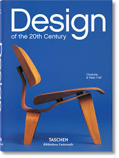

READING NOTE
READING NOTE책을 덮고도 한동안, 아무 말도 할 수 없었다
읽는 내내 멈췄던 문장들을 다시 펼쳐보는 밤. 여러분은 어떤 장면에서 가장 오래 머물렀나요?
예시 쓰레드

A LITTLE READING, A DIFFERENT DAY
AI 기반 도서 분석 및
창작 지원 통합 솔루션 서비스
읽고 싶은 책을 만나고, 나누고 싶은 문장을 남겨요.


THE READING LIST
다음 페이지가
궁금해지는 책들.



FOR YOUR NEXT CHAPTER
구매 목록, 감명 깊게 읽은 도서 등
사용자 활동 데이터 기반
인공지능 도서 추천을 만나는 공간.
지금은 선택한 취향으로 추천을 미리 경험해보세요.
FOLLOW YOUR CURIOSITY
장르별 도서 목록 · 지금 마음이 가는 쪽을 골라요.
BETWEEN THE LINES
최근 사람들이 많이 공감한 게시글입니다.
아래는 독서 대화를 위한 예시예요. 나만의 이야기도 남겨보세요.
READING NOTE읽는 내내 멈췄던 문장들을 다시 펼쳐보는 밤. 여러분은 어떤 장면에서 가장 오래 머물렀나요?
 READING NOTE
READING NOTE첫 장으로 돌아가 다시 읽으면 달라지는 마음. 같은 책을 두 번 읽는 즐거움에 대해 이야기해요.
 READING NOTE
READING NOTE거창한 독서 계획 대신 하루 한 챕터. 식물 옆에 책을 두기 시작한 뒤로 달라진 저녁입니다.
 READING NOTE
READING NOTE정답을 찾기보다 나와 닮은 마음 하나를 발견하는 것. 오늘은 그런 독서가 하고 싶었어요.
 READING NOTE
READING NOTE소설 속 풍경이 여행의 목적지가 될 때. 책 한 권과 걷고 싶은 도시가 있으신가요?
 READING NOTE
READING NOTE예전에는 밑줄 긋지 않았을 문장에서 멈추게 되는 날. 책은 그대로인데 나는 조금 달라졌나 봐요.
READING NOTE다른 세계를 상상하면서 지금의 하루를 새롭게 바라봅니다. 여러분의 상상을 바꾼 책도 궁금해요.
READING NOTE책을 추천한다는 건 내 취향의 일부를 건네는 일 같아요. 오늘 누군가에게 건네고 싶은 책은요?
READING NOTE처음 읽을 때와는 다른 속도로 페이지를 넘깁니다. 완독보다 다시 시작했다는 게 기쁜 날이에요.
읽고 싶은 마음을 모아두는 곳.
이 브라우저에 저장돼요. 다른 기기와 공유되지 않아요.